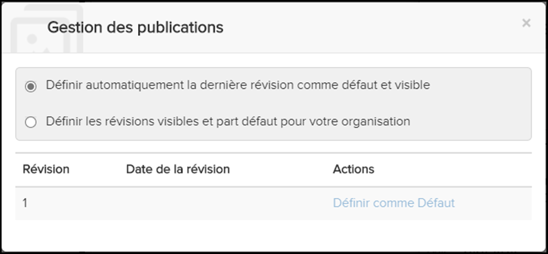

Non applicable pour Pinpoint Standalone Light.
Les administrateurs disposant du privilège Peut gérer les publications de l'organisation peuvent définir la révision de publication par défaut que Pinpoint montre à tous les utilisateurs de votre organisation. Si la publication actuelle a été publiée par votre organisation, vous pouvez voir toutes les révisions. Si votre organisation ne l'a pas publiée, vous ne pouvez voir que les révisions qui ont été partagées avec votre organisation.
Les administrateurs disposant du privilège Peut fusionner de nouvelles révisions peuvent également créer des rapports de fusion, afficher des rapports de fusion et résoudre les conflits. Reportez-vous à Fusion de révisions pour plus d'informations.
Pour chaque publication que vous souhaitez configurer, ouvrez-la d'abord dans le volet
Bibliothèque. Cliquez ensuite sur  Gérer la publication dans la barre Table des
matières pour ouvrir la boîte de dialogue Gestion des
publications.
Gérer la publication dans la barre Table des
matières pour ouvrir la boîte de dialogue Gestion des
publications.
Voici un exemple de la boîte de dialogue Gestion des publications pour un administrateur avec le privilègePeut gérer les publications de l'organisation:

Gestion des Publications dialogue
Définir la révision par défaut
- Pour afficher la dernière révision publiée (qui sera automatiquement mise à jour s'il y a des publications futures), sélectionnez le bouton radio Définir automatiquement la dernière révision comme défaut et visible. Il s'agit de la sélection par défaut si personne dans votre organisation n'a précédemment utilisé cette boîte de dialogue pour sélectionner une révision de publication spécifique.
- Pour afficher une révision spécifique publiée précédemment, sélectionnez le bouton radio Définir les révisions visibles et la partie défaut pour votre organisation. Cliquez ensuite sur le lien hypertexte Définir comme Défaut à droite de la révision que vous souhaitez afficher.
La révision que vous définissez par défaut est la révision qui s'ouvre en premier lorsqu'un utilisateur de l'organisation ouvre la publication.
Reportez-vous à Gestion des publications pour plus d'informations sur cette boîte de dialogue.